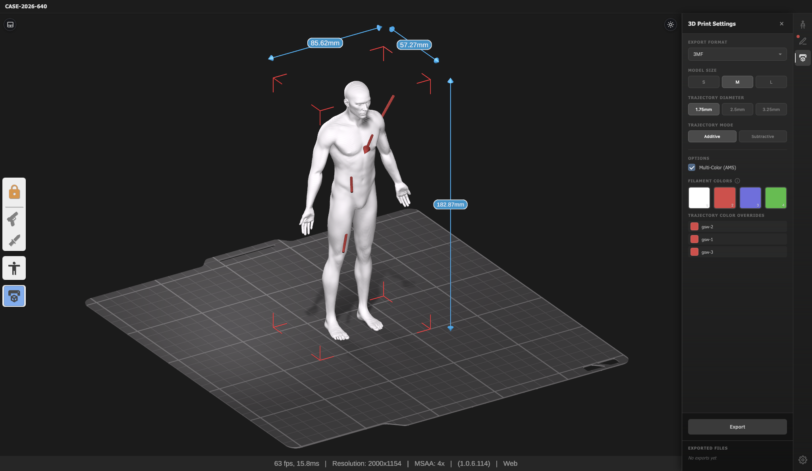
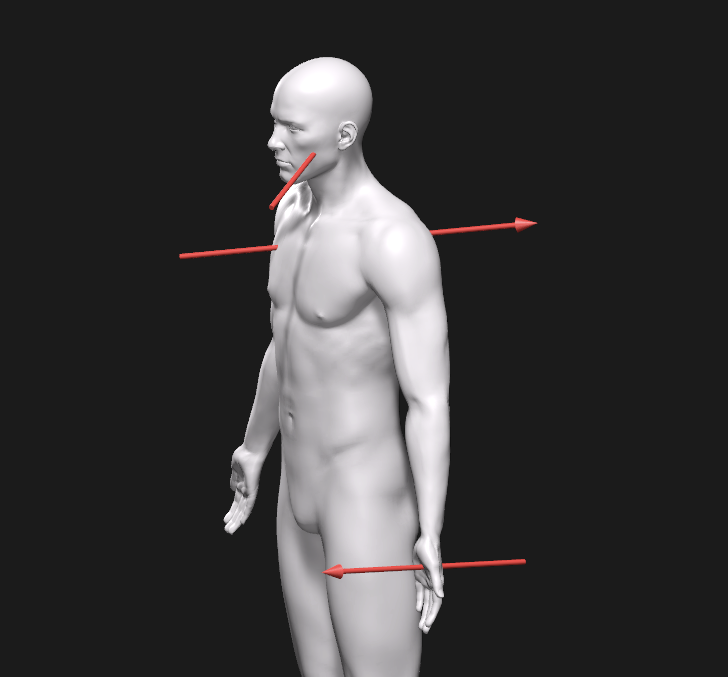
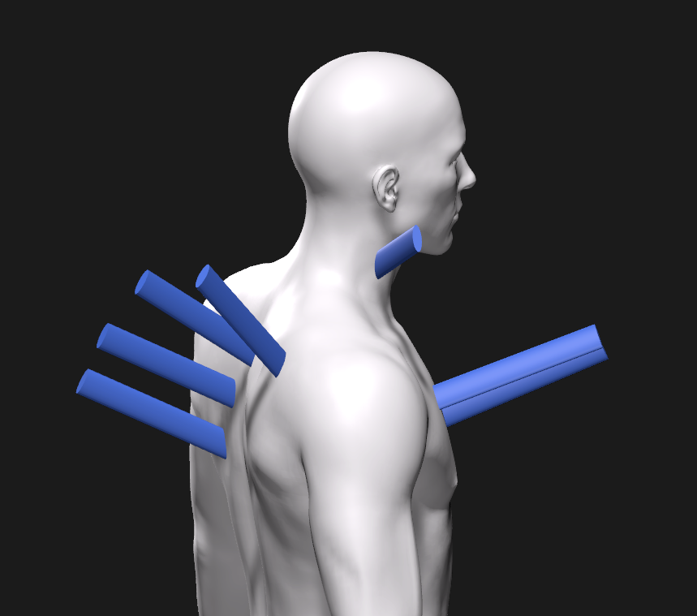
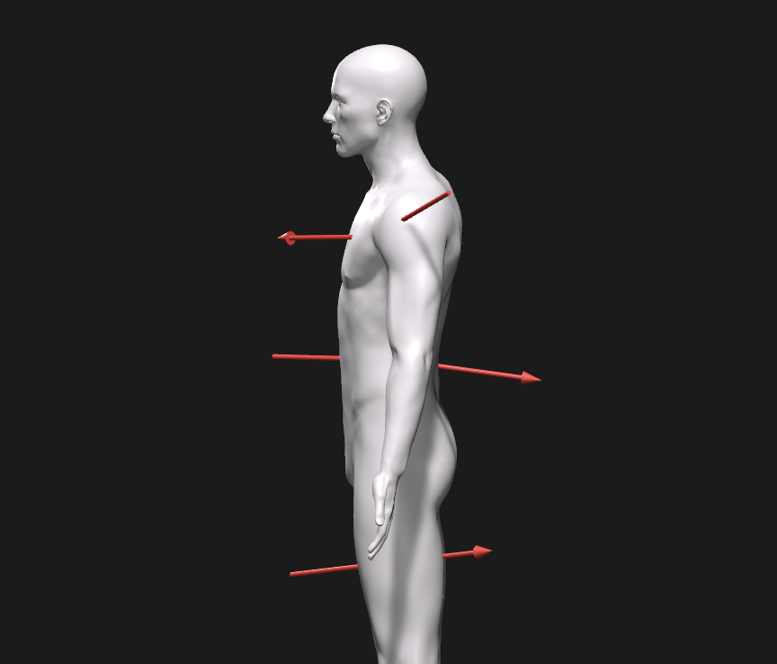

The Tool
Interactive 3D trajectory annotation
AutopsyPrint runs entirely in the browser. Forensic pathologists annotate entry points and wound trajectories on an interactive 3D body model using azimuth and elevation angles, then export the result directly to a 3D-printable file.

Background
From 2D paper forms to 3D spatial documentation
Forensic autopsy findings are typically recorded using paper-based formats, a process that results in loss of three-dimensional information. While surface wounds can be outlined on 2D body models, recording wound trajectories poses fundamental geometric challenges and a single trajectory requires multiple angular view points for understanding the spatial orientation.
3D printing technologies can transform autopsy findings into physical models, providing more accessible 3D visualisation than paper-based approaches. The declining costs of FDM printers, combined with user-friendly software, creates an immediate opportunity for implementation in forensic practice.
When autopsy findings are presented on two-dimensional models, there is an inherent reduction of spatial information, which the viewer must infer from simplified anatomical and geometrical representations. Multiple diagrams representing trajectory angles must be integrated into a complete mental model, introducing further potential for errors in viewer understanding.
Forensic specialists have the extensive training and anatomical knowledge required to mentally reconstruct 3D models from 2D. However, for jurors and other non-specialist stakeholders, such mental reconstruction is likely demanding, if not impossible. The possibility of physically holding, manipulating and otherwise interacting with complex autopsy data are key advantages of 3D printing.
Contributions
What AutopsyPrint offers
Place entry and exit points on an interactive 3D body model. Trajectories are defined using a spherical coordinate system (azimuth and elevation angles), supporting gunshot wounds, stab wounds, and other ballistic injury types.
Reposition limbs using inverse kinematics to optimally visualise trajectories. For example, raising the arms to clear a thorax gunshot path. Trajectories automatically reposition when the pose changes.
Export to .3mf or .stl with configurable model size (small, medium, large), additive or subtractive trajectory rendering, and single- or multi-colour printing support for standard FDM printers.
Physical 3D models allow jurors, investigators, and other non-specialist stakeholders to directly inspect and manipulate spatial forensic findings, without requiring mental reconstruction from 2D diagrams.
Example Cases
Download and explore
The following example cases illustrate typical documentation scenarios. Each can be downloaded as a .3mf file for 3D printing, or opened directly in the web app.

A middle aged male shot 2-3 times with 9 mm pistol. There is a perforating gunshot wound to the chest and to the left hand. A penetrating gunshot wound to the left side of the face, i.e. no exit and a projectile found in the tissue.

A young male is stabbed mulitple times in the neck, chest and back.

A young male is shot three times with a high powered rifle. The wound canal in two of the injuries is not a straight line.
Publication
Research paper
Related Work
Contact
Get in touch
The source code is not currently publicly available. For research collaborations, evaluation access, or questions about the tool, contact the corresponding author:
mikkel.petersen@cfin.au.dk · fatal.report
Funding
This work is supported by an InnoExplorer grant from the Danish Innovation Foundation.